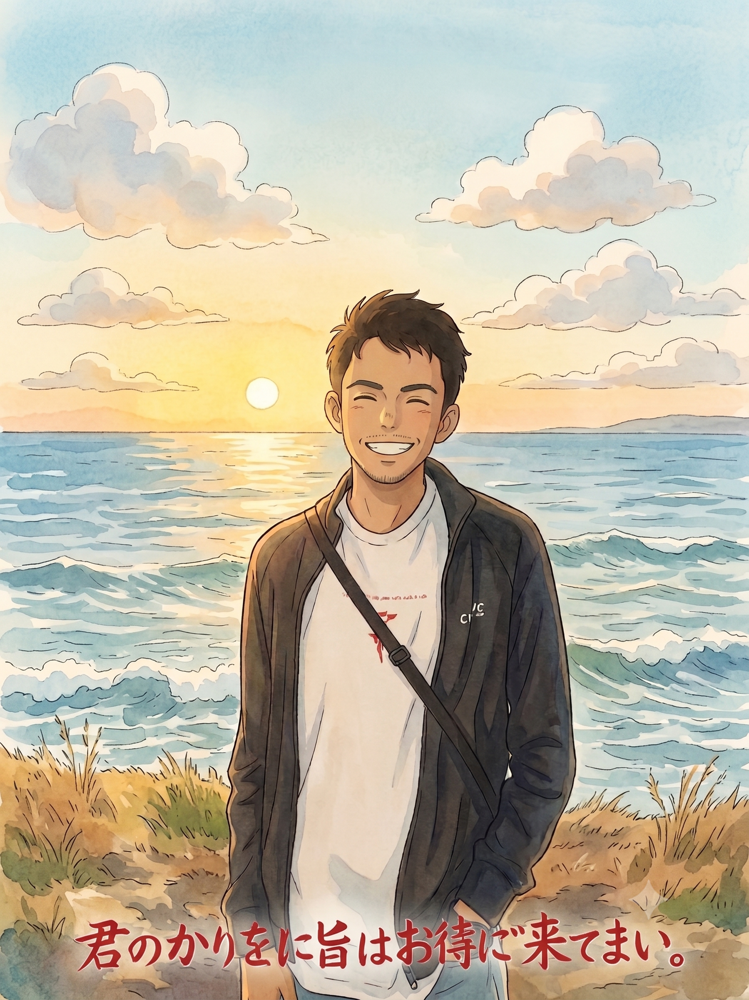

Specializing in system observability, high-performance microservices, and AI-driven telemetry. Focused on architecting scalable backend systems, driving zero-downtime deployments, and elevating developer infrastructure.

About Me
I am a Senior DevOps and MLOps Engineer with over two years of production experience at Comviva (a Tech Mahindra company). My expertise heavily revolves around deployments, CI/CD pipelines, Terraform, and database management.
I build the automated systems that reliably take machine learning models out of the lab and put them into the real world. I sit right between the data science guys and the production engineering team to ensure deployments are fast, seamless, and do not break things.
Right now, I am upgrading my skills with a Master of IT (AI Specialisation) at the University of Melbourne and am available for part-time, casual, or contract roles.
Technical Expertise
Career History
Case Studies
Build a production-grade RAG managed system that lets anyone upload a PDF and ask questions about it, backed by a complete MLOps lifecycle.
Built a LangChain + ChromaDB RAG pipeline served via FastAPI, containerised with Docker, and deployed on Kubernetes with 2 replicas and readiness probes. Every query is logged as an MLflow experiment run tracking latency and retrieval metrics. Real-time observability via Prometheus and Grafana. Automated testing, linting, and Docker build on every push via GitHub Actions CI/CD.
Develop a Convolutional Neural Network (CNN) to automate the segmentation of medical imagery, reducing manual diagnostic workload and ensuring high accuracy.
Built and trained the core segmentation models utilizing TensorFlow and Keras. To ensure the model could be reliably deployed across environments without dependency conflicts, I containerised the entire inference service using Docker and exposed the model's capabilities via lightweight REST API endpoints.
Leadership & Mentorship
Academic Background
Specialisation: Artificial Intelligence
Coursework focus: Machine Learning, Deep Learning, Cloud Computing, and AI Ethics.
Major: Information Technology
Graduated with 8.74/10 GPA.
Recommendations